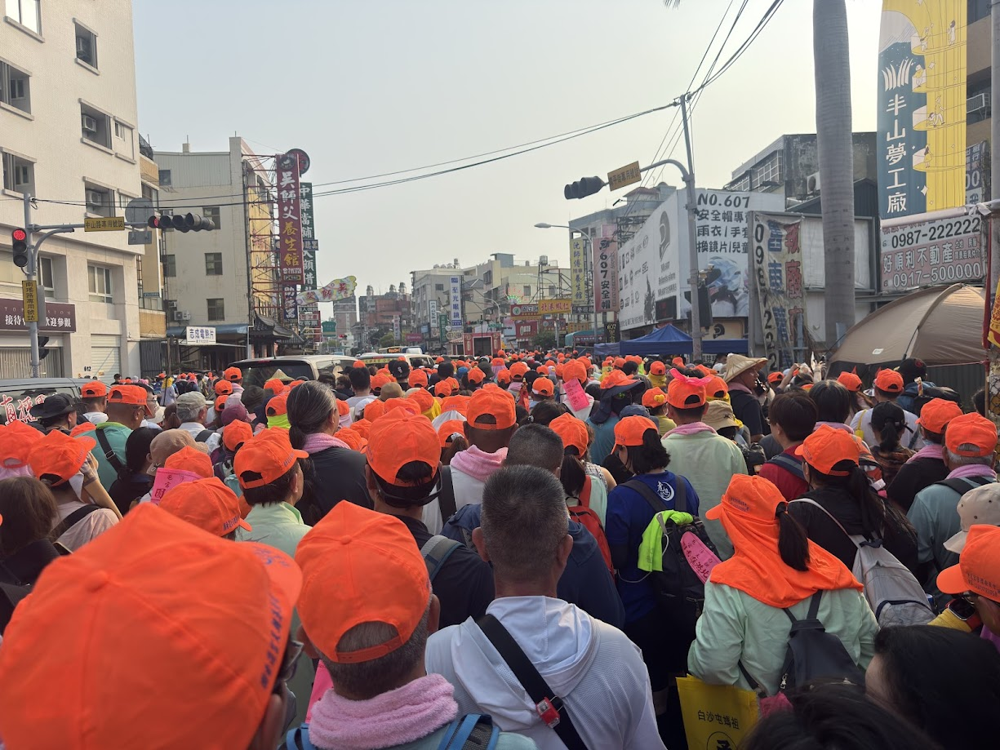

主題發想照片
images/process-01.jpg
images/process-01.jpg

STEP 01
主題發想
確立白沙屯媽祖進香作為文化教材主題，思考如何將臺灣在地文化融入華語教學。



一場進香，一段文化與語言的旅程。
《跟著媽祖學華語》以白沙屯媽祖進香為主題，結合田野調查、在地文化與多模態學習，將真實的文化經驗轉化為華語教材。

從文化踏查、教材編寫到課堂實踐，記錄專題的每一個階段。
確立白沙屯媽祖進香作為文化教材主題，思考如何將臺灣在地文化融入華語教學。

走進白沙屯媽祖進香現場，透過田野觀察、照片與影像紀錄，蒐集真實文化素材。

將文化素材轉化為課文、生詞、語法與學習活動，結合多模態媒介進行教材設計。

透過課堂教學、學習者反應與回饋，檢視教材內容並持續調整。
從文化情境出發，透過課文與語言任務，引導學習者理解臺灣信仰文化，並將新學到的華語運用於溝通情境。
從媽祖的故事與信仰背景，認識臺灣民間信仰。
認識進香活動、徒步路程及重要文化特色。
連結白沙屯地方景點、交通與生活文化。
以上單元名稱為網站初始示意，請依正式教材的課次、課文與學習目標修改。
點擊不同的文化節點，探索白沙屯媽祖進香文化，並認識相關的華語詞彙。
從進香出發時的人潮與交通安排，認識參與進香活動前的準備。
接駁車、交通管制、出發
※ 本圖為進香文化歷程示意，並非實際GPS行走路線。
多模態學習區整合文字、靜態影像、動態影片與聲音。建議每項媒介都搭配明確的學習任務，協助學習者從觀察進一步發展文化理解與語言表達。
將影片放入 videos/pilgrimage.mp4
這裡適合放入團隊實地踏查、進香紀錄、教材製作與教學現場的照片。點選圖片可放大瀏覽。


成果展示可呈現教材如何進入實際教學情境，以及學生、授課教師與團隊在試教後的觀察與修正。
透過實際教學觀察學習者對漢字、詞彙及文化內容的理解情形，並依據學習者需求調整教材呈現方式。
教學觀察・可依實際試教紀錄補充教師回饋可作為教材修正的重要參考，例如字體辨識、例句情境、文化內容融入及課堂活動安排。
教師回饋・請替換為正式回饋內容《跟著媽祖學華語》以臺灣在地文化為起點，持續探索文化教材、多模態學習與華語教學之間的連結。
回到網站首頁 ↑